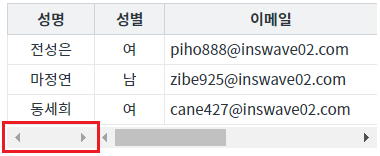
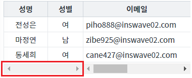
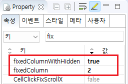

속성 'fixedColumnWithHidden'의 설정 값을 비교하는 예제입니다. 속성 'fixedColumnWithHidden'은 열(컬럼) 고정 기능을 적용할 때 숨겨진 열을 포함하여 계산할지 여부를 설정할 수 있습니다.
열 고정 시 숨김 열을 포함해서 계산
열 고정 시 숨김 열을 제외하고 계산
STEP 1. 실행된 결과를 확인합니다.
화면의 영역 '(기본 값) 2번째 열 고정하기 - 숨김 열을 포함'에 구성된 GridView를 확인합니다.
GridView의 첫 번째 열이 숨겨진 상태입니다.
열 고정이 '성명'까지 적용되어 있습니다.그림 1.브라우저(Chrome) 실행 예시

STEP 1. 실행된 결과를 확인합니다.
화면의 영역 '(기본 값) 2번째 열 고정하기 - 숨김 열을 미포함'에 구성된 GridView를 확인합니다.
GridView의 첫 번째 열이 숨겨진 상태입니다.
열 고정이 '성별'까지 적용되어 있습니다.그림 2.브라우저(Chrome) 실행 예시

STEP1. GridView의 속성을 정의합니다.
[필수] fixedColumnWithHidden="Boolean형식의 값"
열 고정 계산 시 숨김 열의 포함 여부를 설정합니다.
(설정 값)
- true : (기본 값) 숨김 열을 포함하여 계산
- false : 숨김 열을 제외하고 계산
[필수] fixedColumn="Number형식의 값" 또는 fixedRightColumn="Number형식의 값"
열 고정을 설정합니다.
그림 3.웹스퀘어5 SP5 스튜디오의 DataList Property View(속성창) 예시

소스 코드
<w2:gridView fixedColumnWithHidden="true" fixedColumn="2"> <!-- 중략 --> </w2:gridView>
fixedColumnWithHidden
fixedColumn
fixedRightColumn
[웹스퀘어5 SP5 개발 가이드] GridView
링크 : https://docs1.inswave.com/sp5_user_guide/86bdcf48029b958b
[웹스퀘어5 SP5 개발 가이드] GridView - 틀 고정
링크 : https://docs1.inswave.com/sp5_user_guide/86bdcf48029b958b#ebb334cc44295cd2